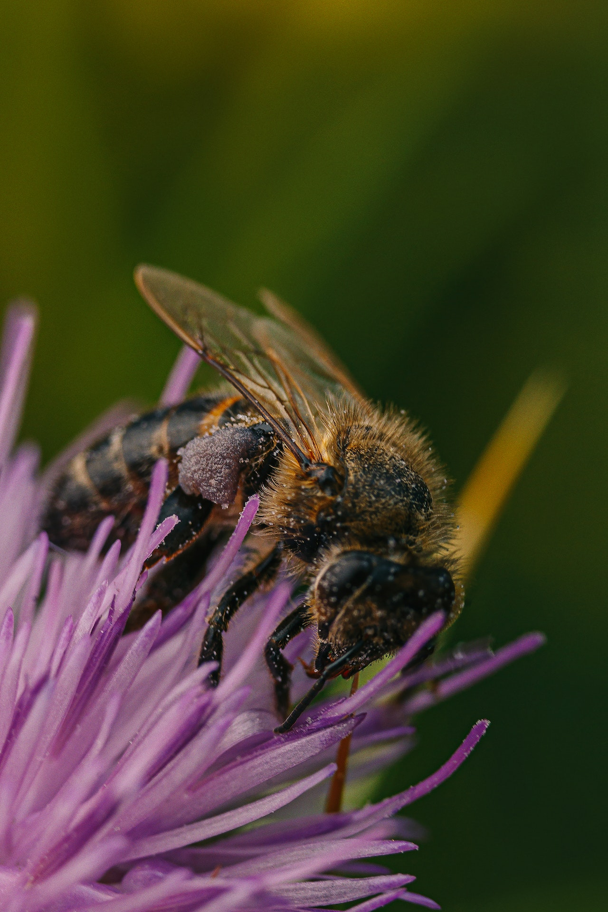
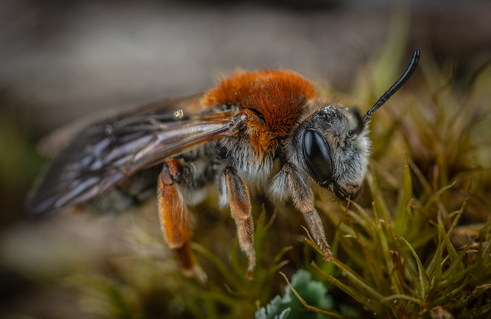

Abelha
do grupo dos insetosA abelha é um inseto pertencente ao grupo dos himenópteros. Existem várias espécies de abelhas encontradas em todo o mundo, desempenhando um papel importante na polinização das plantas e na produção de mel.
As abelhas são conhecidas por viverem em colônias organizadas, com diferentes castas, como a rainha, os zangões e as operárias. Elas constroem colmeias feitas de cera, onde armazenam mel e criam suas larvas.
O tamanho e o peso das abelhas variam de acordo com a espécie. Em média, as abelhas adultas têm cerca de 0,08 cm de comprimento e pesam aproximadamente 0,1 mg. Algumas espécies específicas podem ser um pouco maiores ou menores que essas médias.
As abelhas têm um ciclo de vida que inclui ovo, larva, pupa e adulto. Elas vivem em colônias altamente organizadas, onde cada abelha desempenha um papel específico para garantir a sobrevivência e o bem-estar da colônia como um todo.
"As abelhas são essenciais para a polinização das plantas e desempenham um papel crucial na preservação da biodiversidade."
- Tipo: Inseto
- Tamanho médio: 0,08 cm
- Peso médio: 0,1 mg
- Grupo: Hymenoptera
As abelhas são conhecidas por sua importância na polinização das plantas. Elas coletam néctar das flores e, durante o processo, acabam transferindo o pólen entre as plantas, auxiliando na reprodução e na formação de frutos e sementes.
Além disso, as abelhas também são responsáveis pela produção de mel, um alimento doce e nutritivo. Elas armazenam o néctar coletado em suas colmeias e, por meio de transformações químicas, produzem o mel que utilizam como fonte de energia.